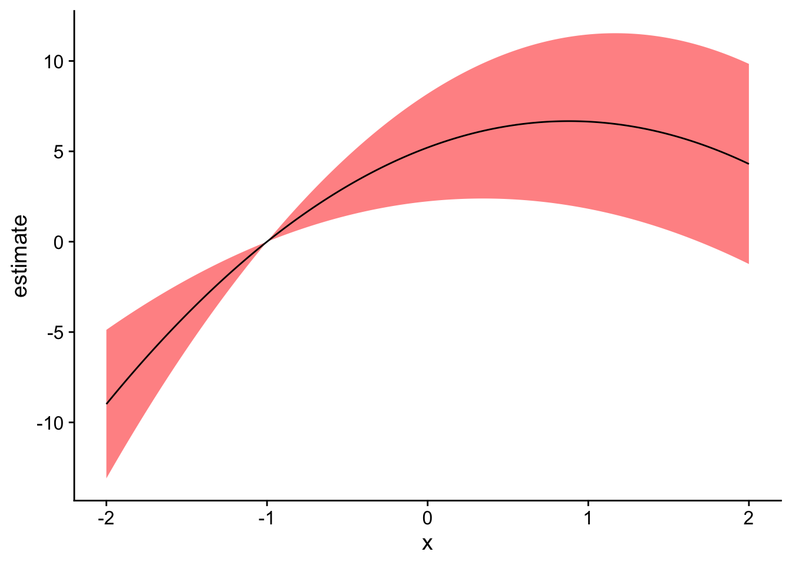

Using fixest + marginaleffects to plot response functions with fixed effects
R
econometrics
Author
Patrick Baylis
Published
September 25, 2025
In a 2021 post, I shared code for plotting response functions from models with high-dimensional fixed effects (like those produced by fixest). This approach is useful when we want to show how an outcome changes with respect to temperature. I’m happy to report that that code is now basically obsolete thanks to the marginaleffects package. This post shows how to plot such functions.
A review of response functions
Temperature affects a lot of stuff. Researchers working in climate impacts often want to examine how an outcome is affected by temperature. For example, a relationship of significant interest to our literature is the link between temperature and mortality (see, for example, Carleton et al. (2022)). The thing is, there’s a lot of good medical reasons to think that the effect might be nonlinear, such as that mortality might be higher when it’s cold or hot than when the temperature is moderate. Finally, we might want to control for correlations between the outcome and climate that aren’t actually a result of the temperature, such as that Miami might just have higher mortality rates than Minnesota for reasons that aren’t directly due to recent temperature fluctuations.
In econometric-speak, a generic form of a model we could use to investigate this relationship (using only unit fixed effects for brevity) is:
where \(y_{it}\) is the outcome of interest (e.g., log mortality), \(f(T; \beta)\) is a flexible function of temperature (e.g., polynomial, splines), \(\phi_i\) are unit fixed effects, and \(\varepsilon_{it}\) is an error term.
Our task is to reproduce an estimate of \(f(T; \beta)\) that, holding everything else equal, shows how the outcome changes with temperature relative to some baseline temperature. In short, we want to compare the predicted value of the outcome \(y\) at a range of plausible values for \(x\) to its predicted value at a reference level of \(x\).
Note that I previously called these “partial predictions”, but I don’t think that’s universally agreed on terminology so I’ll call them “comparisons” here, since that’s what the marginaleffects package calls them. We also want to get a sense of our certainty around that estimate—that is, a confidence interval. That’s what I wrote a bunch of code to do back in 2021, but now marginaleffects::comparisons() can do it for us.
Simulation
I’ll follow the previous post and simulate some panel data with a nonlinear relationship between temperature and an outcome.
pacman::p_load(tidyverse, marginaleffects, fixest, cowplot)# DGPset.seed(42)N <-100data <-data.frame(x =rnorm(N), id =rep(c("A", "B"), times = N/2))data$y <-1+3* data$x -2* data$x^2+as.numeric(data$id =="A") *3+rnorm(N, 0, 10) # Fit a model that accounts for group meansfit_feols <-feols(y ~ x +I(x^2) | id, data = data)etable(fit_feols)
fit_feols
Dependent Var.: y
x 3.322*** (0.9207)
I(I(x^2)) -1.888** (0.6076)
Fixed-Effects: -----------------
id Yes
_______________ _________________
S.E. type IID
Observations 100
R2 0.24974
Within R2 0.24735
---
Signif. codes: 0 '***' 0.001 '**' 0.01 '*' 0.05 '.' 0.1 ' ' 1
Plot the response function
Now we want to plot the response function using the comparisons() function from the marginaleffects package. We create some fake data (which needs to include all the variables in the model, though only x needs to vary). The function doesn’t behave exactly as one might expect, but with a little help from a fellow UBC researcher on Stack Overflow, I worked out how to make it do what I needed.
x_ref <-1# reference x valuex_pred <-seq(-3, 3, 0.1) # x values we want to compare to our reference# Construct variables we need to pass to comparisons()comps <-data.frame(hi = x_ref, lo = x_pred)pred_df <-comparisons(fit_feols, variables =list("x"= comps), newdata =datagrid(x = x_pred))pred_df$x <- x_pred# Plotggplot(pred_df, aes(x = x, y = estimate)) +geom_ribbon(aes(ymin = conf.low, ymax = conf.high), fill ="lightblue") +geom_line() +theme_cowplot()
Warning: Removed 1 row containing missing values or values outside the scale range
(`geom_ribbon()`).
And that’s it! Well, almost. I don’t want to remember the fancy footwork above every time, so I include a small helper function that packages it all up in a somewhat generic form.
get_comparisons <-function(model, varname, x_vals, x_ref) { comps <-data.frame(hi = x_ref, lo = x_vals) variables_list <-list(comps)names(variables_list) <- varname pred_df <-comparisons(fit_feols, variables = variables_list, newdata =datagrid(x = x_vals)) pred_df$x <- comps$loreturn(pred_df)}# Using the function, compare over a smaller range with a different reference xpred_df2 <-get_comparisons(fit_feols, "x", x_vals =seq(-2, 2, 0.01), x_ref =-1)# Plot againggplot(pred_df2, aes(x = x, y = estimate)) +geom_ribbon(aes(ymin = conf.low, ymax = conf.high), fill ="red", alpha =0.5) +geom_line() +theme_cowplot()
Warning: Removed 1 row containing missing values or values outside the scale range
(`geom_ribbon()`).

References
Carleton, Tamma, Amir Jina, Michael Delgado, Michael Greenstone, Trevor Houser, Solomon Hsiang, Andrew Hultgren, et al. 2022. “Valuing the Global Mortality Consequences of Climate Change Accounting for Adaptation Costs and Benefits.”The Quarterly Journal of Economics 137 (4): 2037–2105.